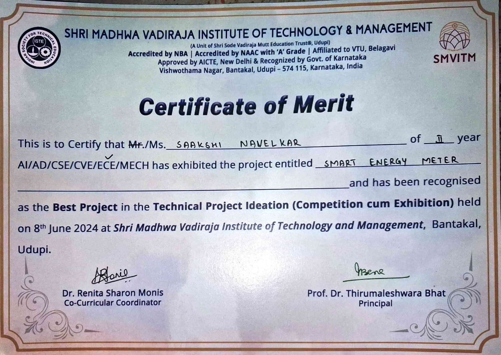

This project was developed to monitor and control electricity usage using a prepaid system. It is built using Arduino and a GSM module to track real-time energy consumption of a household. The system maintains a prepaid balance and sends SMS alerts when the balance is low. When the balance reaches zero, it automatically disconnects the power supply. This helps users manage electricity usage efficiently and avoid overconsumption.
In this project, the energy meter generates pulses based on the electricity consumed. These pulses are read by the Arduino, which calculates the total units used. Based on this consumption, the prepaid balance is reduced step by step. The GSM module is used to communicate with the user through SMS. When the balance becomes low, the system automatically sends a message to inform the user. This helps the user recharge before the electricity gets disconnected. If the balance reaches zero, the Arduino sends a signal to the relay module. The relay then turns off the power supply, effectively disconnecting electricity to prevent further usage without recharge. The system also supports recharge through SMS. When the user sends a recharge message, the GSM module receives it and passes it to the Arduino. The Arduino then updates the balance accordingly and resumes normal operation. This project shows how basic hardware components can be combined to build a useful system for monitoring and controlling electricity usage in daily life.
